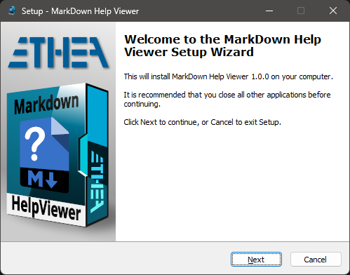
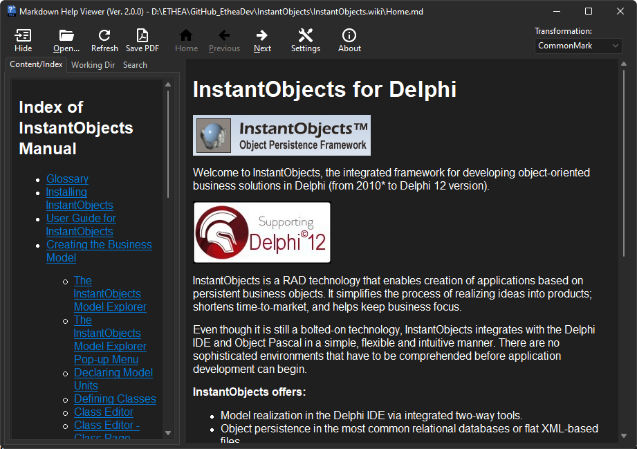
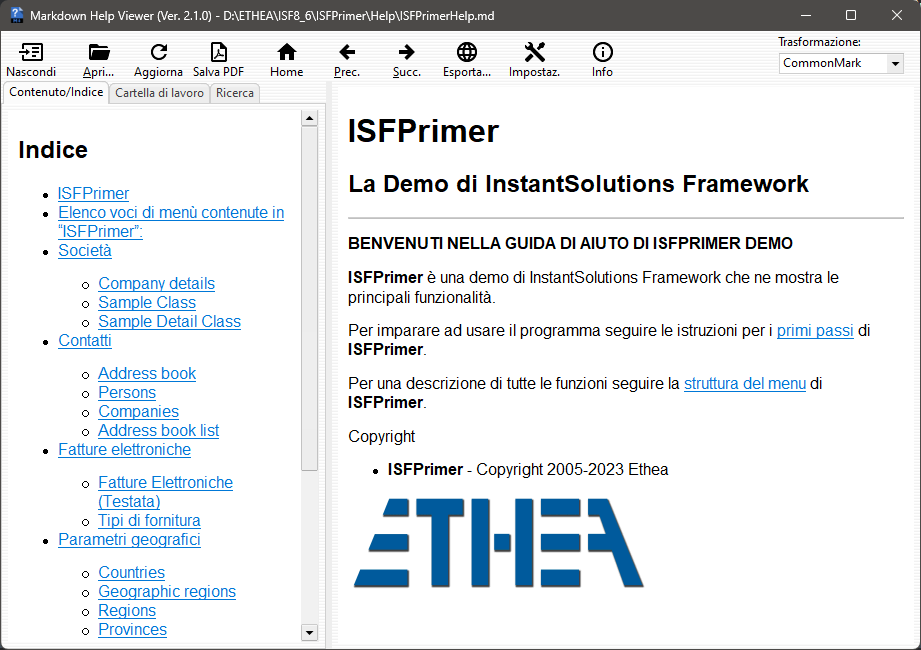

Latest Version 2.5.4 - 06 Jul 2026
An integrated help system based on files in Markdown format (and also html), for Delphi and Windows applications
A “Setup” of the pre-built “Markdown Help Viewer” ready to use.
A unit (MarkdownHelpViewer.pas) to add the interface to Delphi Help System of your Delphi Application (from XE6 version to latest)
A VCL Visual Component (TMarkdownViewer) to automatically show Markdown file formatted in HTML (from XE6 version to latest)
A simple demo to show how to integrate the Help in your application, as exaplained here…
For editing and prepare the Help manual of your application we suggest to use the Editor contained into “Markdown Shell Extensions” project.

Related links: embarcadero.com - learndelphi.org
Follow the Project Site to known how to use this Viewer and the Delphi component and other tools related to Markdown format like the Markdown Text Editor.
Supports Windows 10 and 11 (for 32 bits and 64 bits).
Themes (Dark and Light) according to user preferences of Windows Theme
Auto-detect Index file in the working folder
Very easy to integrate into Delphi Application, also in “embedded” mode.
Automatic check and download when a new version is available
Click to download the MarkDownHelpViewerSetup.exe located also in the Release area. The Installer works both for 32 and 64 bit system. Warning: this setup installs only the viewer.

If you want to use the Delphi Component you need to manual Build and Install the packages.
Open the correct group-project file for your Delphi version, located into Packages folder (for example: Packages\D13\MarkDownHelpViewerGroup.groupproj).
Then Build the run-time packages:
and Install the design-time package:
The component TMarkdownViewer is ready to use.
Remember also to add those Search Path:
If you want to manual Build the Viewer, you can Build:
{MarkdownViewerInstallDir}\Source\MDHelpViewer.dproj
A useful Viewer for instant preview of Markdown formatted content help files (with auto-detection of Windows-Theme):

The Viewer is “localized” for some languages. In this example the GUI with Italian language:

Use MarkdownHelpViewer.pas (located into AppInterface folder) in dpr:
MarkdownHelpViewer in '..\..\AppInterface\MarkDownHelpViewer.pas',
then specify the default file of the help:
Application.HelpFile := ExtractFilePath(Application.ExeName)+'..\Help\Home.md';
If you have installed the viewer using the provided Setup, the installation folder of the Viewer is registere into:
HKEY_CLASSES_ROOT\Applications\MDHelpViewer.exe\Shell\Open\Command
so the interface can launch the viewer automatically.
If you don't want to use the provided Setup you can register the location of the Viewer built by yourself and deployed to a specific location, for example:
{$IFDEF WIN32}
RegisterMDViewerLocation(ExtractFilePath(Application.ExeName)+
'..\..\Bin32\MDHelpViewer.exe');
{$ELSE}
RegisterMDViewerLocation(ExtractFilePath(Application.ExeName)+
'..\..\Bin64\MDHelpViewer.exe');
{$ENDIF}
To test the application you can lauch the Home.md help using the menu About/Help: in the OnClick handler invoke the help:
procedure TfmMain.HelpMenuItemClick(Sender: TObject);
begin
Application.HelpKeyword('home');
end;
In any Delphi component, you can define HelpType (htKeyword or htContext) and the specify HelpKeyword (string) or HelpContext (Integer).
When the user press “F1” inside the application, the HelpSystem is invoked with HelpKeyword or HelpContext.
Then the interface searches in the same folder of default file (specified into Application.HelpFile) the specific file using those rules:
06 Jul 2026: ver. 2.5.4
26 Jun 2026: ver. 2.5.3
18 Jun 2026: ver. 2.5.2
17 Jun 2026: ver. 2.5.1
08 Jun 2026: ver. 2.5.0
05 Jun 2026: ver. 2.4.2
11 Apr 2026: ver. 2.4.1
20 Feb 2026: ver. 2.4.0
06 Nov 2025: ver. 2.3.7
24 Aug 2025: ver. 2.3.6
23 Mar 2025: ver. 2.3.5
26 Jan 2025: ver. 2.3.4
16 Dec 2024: ver. 2.3.3
14 Jun 2024: ver. 2.3.2
10 May 2024: ver. 2.3.1
06 Apr 2024: ver. 2.3.0
20 Mar 2024: ver. 2.2.0
19 Mar 2024: ver. 2.1.2
3 Jan 2024: ver. 2.1.1
25 Oct 2023: ver. 2.0.1
23 Oct 2023: ver. 2.0.0
20 Sep 2023: ver. 1.3.0
30 Jun 2023: ver. 1.2.0
29 Jun 2023: ver. 1.1.0
23 Jun 2023: ver. 1.0.0
Learn more about “MarkDown Help Viewer” within our wiki. Dive deeper into everything related to this tool, its features, and how to make the most of it.
Licensed under the Apache License, Version 2.0 (the “License”);
Unless required by applicable law or agreed to in writing, software distributed under the License is distributed on an “AS IS” BASIS, WITHOUT WARRANTIES OR CONDITIONS OF ANY KIND, either express or implied. See the License for the specific language governing permissions and limitations under the License.
SVGIconImageList - https://github.com/EtheaDev/SVGIconImageList/
StyledComponents - https://github.com/EtheaDev/StyledComponents
Delphi MarkdownProcessor - https://github.com/EtheaDev/MarkdownProcessor
OpenSLL Library: Cryptography and SSL/TLS Toolkit
Copyright © 1998-2018 The OpenSSL Project. All rights reserved.
Delphi Markdown - https://github.com/grahamegrieve/delphi-markdown
Copyright (c) 2011+, Health Intersections Pty Ltd All rights reserved
Delphi Preview Handler - https://github.com/RRUZ/delphi-preview-handler
The Initial Developer of the Original Code is Rodrigo Ruz V. Portions created by Rodrigo Ruz V. are Copyright © 2011-2023 Rodrigo Ruz V.
Synopse/SynPDF - https://github.com/synopse/SynPDF
Copyright © Synopse: all right reserved.
HtmlToPdf - https://github.com/MuzioValerio/HtmlToPdf
Copyright © Muzio Valerio.
Image32 Library - http://www.angusj.com/delphi/image32/Docs/_Body.htm
Copyright ©2019-2023 Angus Johnson.
HTMLViewer - https://github.com/BerndGabriel/HtmlViewer
Copyright (c) 1995 - 2008 by L. David Baldwin
Copyright (c) 1995 - 2023 by Anders Melander (DitherUnit.pas)
Copyright (c) 1995 - 2023 by Ron Collins (HtmlGif1.pas)
Copyright (c) 2008 - 2009 by Sebastian Zierer (Delphi 2009 Port)
Copyright (c) 2008 - 2010 by Arvid Winkelsdorf (Fixes)
Copyright (c) 2009 - 2023 by HtmlViewer Team
To simpilfy compilation of projects they are added into ext folder